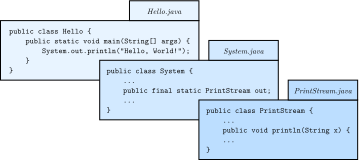
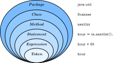

3 Input and Output
The programs you’ve looked at so far simply display messages, which doesn’t really involve that much computation. This chapter shows you how to read input from the keyboard, use that input to calculate a result, and then format that result for output.
3.1 The System Class
We have been using System.out.println for a while, but you might not have thought about what it means. System is a class that provides methods related to the “system”, or environment, where programs run. It also provides System.out, which is a special value that has additional methods (like println) for displaying output.
In fact, we can use System.out.println to display the value of System.out:
System.out.println(System.out);The result is shown here:
java.io.PrintStream@685d72cdThis output indicates that System.out is a PrintStream, which is defined in a package called java.io. A package is a collection of related classes; java.io contains classes for I/O which stands for “input and output”.
The numbers and letters after the @ sign are the address of System.out, represented as a hexadecimal (base 16) number. The address of a value is its location in the computer’s memory, which might be different on different computers. In this example, the address is 685d72cd, but if you run the same code, you will likely get something else.
As shown in Figure 3.1, System is defined in a file called System.java, and PrintStream is defined in PrintStream.java. These files are part of the Java library, which is an extensive collection of classes that you can use in your programs. The source code for these classes is usually included with the compiler (see Section 10.6).

System.out.println refers to the out variable of the System class, which is a PrintStream that provides a method called println.
3.2 The Scanner Class
The System class also provides the special value System.in, which is an InputStream that has methods for reading input from the keyboard. These methods are not convenient to use, but fortunately Java provides other classes that make it easy to handle common input tasks.
For example, Scanner is a class that provides methods for inputting words, numbers, and other data. Scanner is provided by java.util, which is a package that contains various “utility classes”. Before you can use Scanner, you have to import it like this:
import java.util.Scanner;This import statement tells the compiler that when you refer to Scanner, you mean the one defined in java.util. Using an import statement is necessary because there might be another class named Scanner in another package.
Next you have to initialize the Scanner. This line declares a Scanner variable named in and creates a Scanner that reads input from System.in:
Scanner in = new Scanner(System.in);The Scanner class provides a method called nextLine that reads a line of input from the keyboard and returns a String. Here’s a complete example that reads two lines and repeats them back to the user:
import java.util.Scanner;
public class Echo {
public static void main(String[] args) {
String line;
Scanner in = new Scanner(System.in);
System.out.print("Type something: ");
line = in.nextLine();
System.out.println("You said: " + line);
System.out.print("Type something else: ");
line = in.nextLine();
System.out.println("You also said: " + line);
}
}Import statements can’t be inside a class definition. By convention, they are usually at the beginning of the file. If you omit the import statement, you get a compiler error like “cannot find symbol”. That means the compiler doesn’t know where to find the definition for Scanner.
You might wonder why we can use the System class without importing it. System belongs to the java.lang package, which is imported automatically. According to the documentation, java.lang “provides classes that are fundamental to the design of the Java programming language.” The String class is also part of java.lang.
3.3 Language Elements
At this point, we have seen nearly all of the organizational units that make up Java programs. Figure 3.2 shows how these “language elements” are related.

Java applications are typically organized into packages (like java.io and java.util) that include multiple classes (like PrintStream and Scanner). Each class defines its own methods (like println and nextLine), and each method is a sequence of statements.
Each statement performs one or more computations, depending on how many expressions it has, and each expression represents a single value to compute. For example, the assignment statement hours = minutes / 60.0; contains a single expression: minutes / 60.0.
Tokens are the most basic elements of a program, including numbers, variable names, operators, keywords, parentheses, braces, and semicolons. In the previous example, the tokens are hours, =, minutes, /, 60.0, and ; (spaces are ignored by the compiler).
Knowing this terminology is helpful, because error messages often say things like “not a statement” or “illegal start of expression” or “unexpected token”. Comparing Java to English, statements are complete sentences, expressions are phrases, and tokens are individual words and punctuation marks.
Note there is a big difference between the Java language, which defines the elements in Figure 3.2, and the Java library, which provides the built-in classes that you can import. For example, the keywords public and class are part of the Java language, but the names PrintStream and Scanner are not.
The standard edition of Java comes with several thousand classes you can use, which can be both exciting and intimidating. You can browse this library on Oracle’s website (https://thinkjava.org/apidoc). Interestingly, most of the Java library is written in Java.
3.4 Literals and Constants
Although most of the world has adopted the metric system for weights and measures, some countries are stuck with imperial units. For example, when talking with friends in Europe about the weather, people in the United States might have to convert from Celsius to Fahrenheit and back. Or they might want to convert height in inches to centimeters.
We can write a program to help. We’ll use a Scanner to input a measurement in inches, convert to centimeters, and then display the results. The following lines declare the variables and create the Scanner:
int inch;
double cm;
Scanner in = new Scanner(System.in);The next step is to prompt the user for the input. We’ll use print instead of println so the user can enter the input on the same line as the prompt. And we’ll use the Scanner method nextInt, which reads input from the keyboard and converts it to an integer:
System.out.print("How many inches? ");
inch = in.nextInt();Next we multiply the number of inches by 2.54, since that’s how many centimeters there are per inch, and display the results:
cm = inch * 2.54;
System.out.print(inch + " in = ");
System.out.println(cm + " cm");This code works correctly, but it has a minor problem. If another programmer reads this code, they might wonder where 2.54 comes from. For the benefit of others (and yourself in the future), it would be better to assign this value to a variable with a meaningful name.
A value that appears in a program, like the number 2.54, is called a literal. In general, there’s nothing wrong with literals. But when numbers like 2.54 appear in an expression with no explanation, they make the code hard to read. And if the same value appears many times and could change in the future, it makes the code hard to maintain.
Values like 2.54 are sometimes called magic numbers (with the implication that being magic is not a good thing). A good practice is to assign magic numbers to variables with meaningful names, like this:
double cmPerInch = 2.54;
cm = inch * cmPerInch;This version is easier to read and less error-prone, but it still has a problem. Variables can vary (hence the term), but the number of centimeters in an inch does not. Once we assign a value to cmPerInch, it should never change. Java provides the keyword final, a language feature that enforces this rule:
final double CM_PER_INCH = 2.54;Declaring that a variable is final means that it cannot be reassigned once it has been initialized. If you try, the compiler gives an error.
Variables declared as final are called constants. By convention, names for constants are all uppercase, with the underscore character (_) between words.
3.5 Formatting Output
When you output a double by using print or println, it displays up to 16 decimal places:
System.out.print(4.0 / 3.0);The result is as follows:
1.3333333333333333That might be more than you want. System.out provides another method, called printf, that gives you more control of the format. The “f” in printf stands for “formatted”. Here’s an example:
System.out.printf("Four thirds = %.3f", 4.0 / 3.0);The first value in the parentheses is a format string that specifies how the output should be displayed. This format string contains ordinary text followed by a format specifier, which is a special sequence that starts with a percent sign. The format specifier \%.3f indicates that the following value should be displayed as floating-point, rounded to three decimal places:
Four thirds = 1.333The format string can contain any number of format specifiers; here’s an example with two of them:
int inch = 100;
double cm = inch * CM_PER_INCH;
System.out.printf("%d in = %f cm\n", inch, cm);The result is as follows:
100 in = 254.000000 cmLike print, printf does not append a newline. So format strings often end with a newline character.
The format specifier \%d displays integer values (“d” stands for “decimal”, meaning base 10 integer). The values are matched up with the format specifiers in order, so inch is displayed using \%d, and cm is displayed using \%f.
Learning about format strings is like learning a sublanguage within Java. There are many options, and the details can be overwhelming. Table 3.1 lists a few common uses, to give you an idea of how things work.
\%d |
Integer in base 10 (“decimal”) | 12345 |
|---|---|---|
\%,d |
Integer with comma separators | 12,345 |
\%08d |
Padded with zeros, at least 8 digits wide | 00012345 |
\%f |
Floating-point number | 6.789000 |
\%.2f |
Rounded to 2 decimal places | 6.79 |
\%s |
String of characters | "Hello" |
\%x |
Integer in base 16 (“hexadecimal”) | bc614e |
For more details, refer to the documentation of java.util.Formatter. The easiest way to find documentation for Java classes is to do a web search for “Java” and the name of the class.
3.6 Reading Error Messages
Notice that the values you pass to printf are separated by commas. If you are used to using the + operator to concatenate strings, you might write something like this by accident:
System.out.printf("inches = %d" + inch); // errorThis line of code is legal, so the compiler won’t catch the mistake. Instead, when you run the program, it causes an exception:
Exception in thread "main" java.util.MissingFormatArgumentException:
Format specifier '%d'
at java.util.Formatter.format(Formatter.java:2519)
at java.io.PrintStream.format(PrintStream.java:970)
at java.io.PrintStream.printf(PrintStream.java:871)
at Example.main(Example.java:10)As you saw in Section 2.10, the error message includes the name of the exception, MissingFormatArgumentException, followed by additional details, Format specifier '%d'. That means it doesn’t know what value to substitute for \%d.
The problem is that concatenation happens first, before printf executes. If the value of inch is 100, the result of concatenation is "inches = %d100". So printf gets the format string, but it doesn’t get any values to format.
The error message also includes a stack trace that shows the method that was running when the error was detected, java.util.Formatter.format; the method that ran it, java.io.PrintStream.format; the method that ran that, java.io.PrintStream.printf; and finally the method you actually wrote, Example.main.
Each line also names the source file of the method and the line it was on (e.g., Example.java:10). That’s a lot of information, and it includes method names and filenames you have no reason to know at this point. But don’t be overwhelmed.
When you see an error message like this, read the first line carefully to see what happened. Then read the last line to see where it happened. In some IDEs, you can click the error message, and it will take you to the line of code that was running. But remember that where the error is discovered is not always where it was caused.
3.7 Type Cast Operators
Now suppose we have a measurement in centimeters, and we want to round it off to the nearest inch. It is tempting to write this:
inch = cm / CM_PER_INCH; // syntax errorBut the result is an error—you get something like, “incompatible types: possible lossy conversion from double to int”. The problem is that the value on the right is floating-point, and the variable on the left is an integer.
Java converts an int to a double automatically, since no information is lost in the process. On the other hand, going from double to int would lose the decimal places. Java doesn’t perform this operation automatically in order to ensure that you are aware of the loss of the fractional part of the number.
The simplest way to convert a floating-point value to an integer is to use a type cast, so called because it molds, or “casts”, a value from one type to another. The syntax for type casting is to put the name of the type in parentheses and use it as an operator:
double pi = 3.14159;
int x = (int) pi;The (int) operator has the effect of converting what follows into an integer. In this example, x gets the value 3. Like integer division, casting to an integer always rounds toward zero, even if the fractional part is 0.999999 (or -0.999999). In other words, it simply throws away the fractional part.
In order to use a cast operator, the types must be compatible. For example, you can’t cast a String to an int because a string is not a number:
String str = "3";
int x = (int) str; // error: incompatible typesType casting takes precedence over arithmetic operations. In the following example, the value of pi gets converted to an integer before the multiplication:
double pi = 3.14159;
double x = (int) pi * 20.0; // result is 60.0, not 62.0Keeping that in mind, here’s how we can convert centimeters to inches:
inch = (int) (cm / CM_PER_INCH);
System.out.printf("%f cm = %d in\n", cm, inch);The parentheses after the cast operator require the division to happen before the type cast. And the result is rounded toward zero. You will see in the next chapter how to round floating-point numbers to the closest integer.
3.8 Remainder Operator
Let’s take the example one step further: suppose you have a measurement in inches and you want to convert to feet and inches. The goal is divide by 12 (the number of inches in a foot) and keep the remainder.
You have already seen the division operation (/), which computes the quotient of two numbers. If the numbers are integers, the operation is integer division. Java also provides the modulo operation (\%), which divides two numbers and computes the remainder.
Using division and modulo, we can convert to feet and inches like this:
feet = 76 / 12; // quotient
inches = 76 % 12; // remainderThe first line yields 6. The second line, which is pronounced “76 mod 12”, yields 4. So 76 inches is 6 feet, 4 inches.
Many people (and textbooks) incorrectly refer to \% as the “modulus operator”. In mathematics, however, modulus is the number you’re dividing by. In the previous example, the modulus is 12.
The Java language specification refers to \% as the “remainder operator”. The remainder operator looks like a percent sign, but you might find it helpful to think of it as a division sign (\(\div\)) rotated to the left.
Modular arithmetic turns out to be surprisingly useful. For example, you can check whether one number is divisible by another: if x \% y is 0, then x is divisible by y. You can use the remainder operator to “extract” digits from a number: x \% 10 yields the rightmost digit of x, and x \% 100 yields the last two digits. And many encryption algorithms use remainders extensively.
3.9 Putting It All Together
At this point, you have seen enough Java to write useful programs that solve everyday problems. You can (1) import Java library classes, (2) create a Scanner, (3) get input from the keyboard, (4) format output with printf, and (5) divide and mod integers. Now we will put everything together in a complete program:
import java.util.Scanner;
/**
* Converts centimeters to feet and inches.
*/
public class Convert {
public static void main(String[] args) {
double cm;
int feet, inches, remainder;
final double CM_PER_INCH = 2.54;
final int IN_PER_FOOT = 12;
Scanner in = new Scanner(System.in);
// prompt the user and get the value
System.out.print("Exactly how many cm? ");
cm = in.nextDouble();
// convert and output the result
inches = (int) (cm / CM_PER_INCH);
feet = inches / IN_PER_FOOT;
remainder = inches % IN_PER_FOOT;
System.out.printf("%.2f cm = %d ft, %d in\n",
cm, feet, remainder);
}
}Although not required, all variables and constants are declared at the top of main. This practice makes it easier to find their types later on, and it helps the reader know what data is involved in the algorithm.
For readability, each major step of the algorithm is separated by a blank line and begins with a comment. The class also includes a documentation comment (/**), which you can learn more about in Appendix 19.
Many algorithms, including the Convert program, perform division and modulo together. In both steps, you divide by the same number (IN_PER_FOOT).
When statements including System.out.printf get long (generally wider than 80 characters), a common style convention is to break them across multiple lines. The reader should never have to scroll horizontally.
3.10 The Scanner Bug
Now that you’ve had some experience with Scanner, we want to warn you about an unexpected behavior. The following code fragment asks users for their name and age:
System.out.print("What is your name? ");
name = in.nextLine();
System.out.print("What is your age? ");
age = in.nextInt();
System.out.printf("Hello %s, age %d\n", name, age);The output might look something like this:
Hello Grace Hopper, age 45When you read a String followed by an int, everything works just fine. But when you read an int followed by a String, something strange happens:
System.out.print("What is your age? ");
age = in.nextInt();
System.out.print("What is your name? ");
name = in.nextLine();
System.out.printf("Hello %s, age %d\n", name, age);Try running this example code. It doesn’t let you input your name, and it immediately displays the output:
What is your name? Hello , age 45To understand what is happening, you need to realize that Scanner doesn’t see input as multiple lines as we do. Instead, it gets a stream of characters as shown in Figure 3.3.
Scanner.
The arrow indicates the next character to be read by Scanner. When you run nextInt, it reads characters until it gets to a non-digit. Figure 3.4 shows the state of the stream after nextInt runs.
nextInt runs.
At this point, nextInt returns the value 45. The program then displays the prompt "What is your name? " and runs nextLine, which reads characters until it gets to a newline. But since the next character is already a newline, nextLine returns the empty string "".
To solve this problem, you need an extra nextLine after nextInt:
System.out.print("What is your age? ");
age = in.nextInt();
in.nextLine(); // read the newline
System.out.print("What is your name? ");
name = in.nextLine();
System.out.printf("Hello %s, age %d\n", name, age);This technique is common when reading int or double values that appear on their own line. First you read the number, and then you read the rest of the line, which is just a newline character.
3.11 Vocabulary
- package:
-
A directory of classes that are related to each other.
- address:
-
The location of a value in computer memory, often represented as a hexadecimal integer.
- library:
-
A collection of packages and classes that are available for use in other programs.
- import statement:
-
A statement that allows programs to use classes defined in other packages.
- token:
-
The smallest unit of source code, such as an individual word, literal value, or symbol.
- literal:
-
A value that appears in source code. For example,
"Hello"is a string literal, and74is an integer literal. - prompt:
-
A brief message displayed in a print statement that asks the user for input.
- magic number:
-
A number that appears without explanation as part of an expression. It should generally be replaced with a constant.
- constant:
-
A variable, declared as
final, whose value cannot be changed. - format string:
-
The string in
System.out.printfthat specifies the format of the output. - format specifier:
-
A special code that begins with a percent sign and specifies the data type and format of the corresponding value.
- stack trace:
-
An error message that shows the methods that were running when an exception occurs.
- type cast:
-
An operation that explicitly converts one data type into another. In Java, it appears as a type name in parentheses, like
(int). - modulo:
-
An operation that yields the remainder when one integer is divided by another. In Java, it is denoted with a percent sign:
5 \% 2is1. - modulus:
-
The value of
bin the expressiona \% b. It often represents unit conversions, such as 24 hours in a day, 60 minutes in an hour, etc.
3.12 Exercises
The code for this chapter is in the ch03 directory of ThinkJavaCode2. See page for instructions on how to download the repository. Before you start the exercises, we recommend that you compile and run the examples.
If you have not already read Appendix 18.3, now might be a good time. It describes the command-line interface, which is a powerful and efficient way to interact with your computer.
Exercise 3.1. When you use printf, the Java compiler does not check your format string. See what happens if you try to display a value with type int using \%f. And what happens if you display a double using \%d? What if you use two format specifiers, but then provide only one value?
Exercise 3.2. Write a program that converts a temperature from Celsius to Fahrenheit. It should (1) prompt the user for input, (2) read a double value from the keyboard, (3) calculate the result, and (4) format the output to one decimal place. When it’s finished, it should work like this:
Enter a temperature in Celsius: 24
24.0 C = 75.2 FHere is the formula to do the conversion: \[F = C \times \frac{9}{5} + 32\] Hint:* Be careful not to use integer division!*
Exercise 3.3. Write a program that converts a total number of seconds to hours, minutes, and seconds. It should (1) prompt the user for input, (2) read an integer from the keyboard, (3) calculate the result, and (4) use printf to display the output. For example, "5000 seconds = 1 hours, 23 minutes, and 20 seconds".
**Hint:* Use the remainder operator.*
Exercise 3.4.
The goal of this exercise is to program a Guess My Number* game. When it’s finished, it should work like this:*
I'm thinking of a number between 1 and 100
(including both). Can you guess what it is?
Type a number: 45
Your guess is: 45
The number I was thinking of is: 14
You were off by: 31To choose a random number, you can use the Random class in java.util. Here’s how it works:
import java.util.Random;
public class GuessStarter {
public static void main(String[] args) {
// pick a random number
Random random = new Random();
int number = random.nextInt(100) + 1;
System.out.println(number);
}
}Like the Scanner class in this chapter, Random has to be imported before we can use it. And as with Scanner, we have to use the new operator to create a Random (number generator).
Then we can use the method nextInt to generate a random number. In this example, the result of nextInt(100) will be between 0 and 99, including both. Adding 1 yields a number between 1 and 100, including both.
The definition of
GuessStarteris in a file called GuessStarter.java, in the directory called ch03, in the repository for this book.Compile and run this program.
Modify the program to prompt the user; then use a
Scannerto read a line of user input. Compile and test the program.Read the user input as an integer and display the result. Again, compile and test.
Compute and display the difference between the user’s guess and the number that was generated.